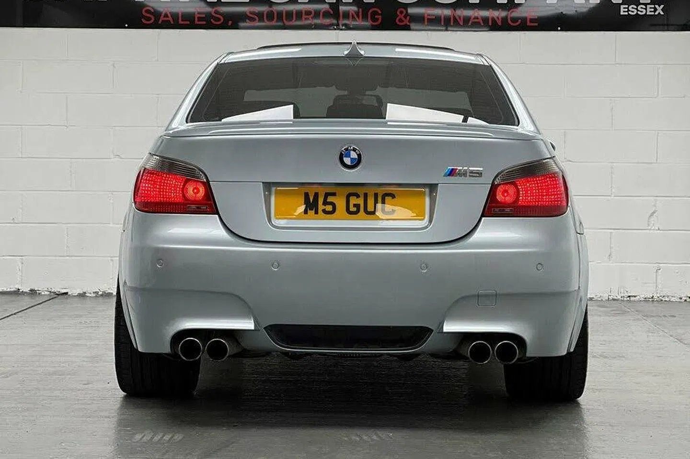

BMW M5 (E60)
The Brave Pill
Ten cylinders, eight owners, how many excuses not to

Last week's Pill pairing of a brace of Rover 800s received a far warmer critical reception than
office cynics expected them to. This week we're returning to more familiar ground with a Pill
combining the carrot of 500hp, rear-wheel drive and a savage, rev-happy V10 engine with
the stick of proven potential to deliver more bills than a William convention. Yep, it's an E60
BMW M5 and, to the surprise of the database rodents, it is the first Pill has featured.
We're about two minutes to midnight on the combustion engine clock, yet even with the end
in sight it is surprising that no major engine cylinder configuration has yet become extinct.
True, there are no straight eights any more, and some other oddball pre-war offerings have
never been replaced. But the world still contains such compelling oddballs as the V10. But it
won't for much longer: the Audi R8 and Lamborghini Huracan are both on the slide to retirement.
Yet if only one V10-powered car was to be placed into a future Museum of Environmental
Hatecrime you could make an excellent case for picking the E60 M5 in place of the more
glamourous supercars; this really was about as mad as the early 21st century car industry
got. In the noughties V10s seemed to be cropping up almost everywhere, with Audi using
them for the more senior S and RS models and Volkswagen even jumping the shark with its
V10 TDI. So it wasn't surprising that when BMW replaced the sublime V8-powered E39 M5 it
did so with a new car featuring two more cylinders and a substantial power upgrade.
But this couldn't come from forced induction. BMW's M Division wrote its own rules in those days, with
the biggest ones pretty much carved in stone: no turbochargers, no automatic gearboxes, only rear-wheel
drive. (Hindsight plays a sad trombone at this point.) The 5.0-litre V10 that was developed was a
technical masterpiece, but it was also a deeply unlikely powerplant for a large saloon, making its peak
torque at 6,100rpm and delivering maximum power just 500rpm shy of its 8,250rpm limiter. That's
because, to the M Division of that era, driveability was less important than outright performance.
To prove this point BMW laid on a runway on the original press launch, letting journalists
perform a full launch control start and giving them strict instructions not to lift until the
'brake here' boards at the far end. By the time these flashed pat the car was sitting on its
limiter at an indicated 165mph and there was a distinct lack of tarmac remaining. Media
events were different in those days.
The E60's transmission choice was similarly performance focussed. The E39 M5's six-speed
manual had been a bar to sales in those parts of the world too dumb to operate clutch
pedals, and the E60 was shifted to an automated single clutch gearbox (a manual was later
offered too, but never in the UK.) The SMT was certainly better than many of its rat trap
rivals, offering varying degrees of shift severity, but even in the gentlest of these it was still
abrupt and lurch-prone compared to a torque converter, or a more modern double-clutch
transmission. Yes, you quickly get used to it. But when I drove BMW's own immaculately
preserved E60 M5 a couple of years ago, the first I'd experienced since the car was on sale,
it was the area in which it felt most dated.